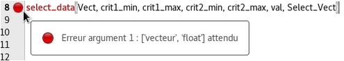

L'interface graphique
La gestion des erreurs
Le menu :

Si l'un des arguments d'un opérateur n'est pas du bon type ou qu'il y a une erreur de parenthèse,
un cercle rouge apparaît pour indiquer l'erreur. Pour savoir qu'elle est l'erreur,
vous pouvez afficher une infobulle en passant la souris sur le cercle rouge.